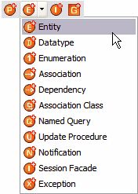

Creating and Editing Tigerstripe Artifacts
To model Service Contracts, Tigerstripe relies on a set of Artifacts that you can create, edit, and remove in a Tigerstripe project.
- Creation of Tigerstripe artifacts is wizard-based; that is, a specific wizard allows you to create the corresponding artifact from the Tigerstripe Perspective.
- Edition of Tigerstripe artifacts. You can edit all artifacts through a form-based artifact editor, where you can define all the specific details of the artifact.
The Tigerstripe Wizards
All Tigerstripe wizards are accessible from the Tigerstripe Perspective.
To access a Tigerstripe wizard:
- Select the corresponding icon on the Tigerstripe toolbar
-OR-
- Select the corresponding menu.

The icons open an artifact wizard as follows (Please note that this list can vary based on your active Tigerstripe Profile):
 for the Managed Entity Artifact creation wizard,
for the Managed Entity Artifact creation wizard, for the Datatype Artifact creation wizard,
for the Datatype Artifact creation wizard, for the Enumeration Artifact creation wizard,
for the Enumeration Artifact creation wizard, for the Named Query Artifact creation wizard,
for the Named Query Artifact creation wizard,- for the Update Procedure Artifact creation wizard,
- for the Exception Artifact creation wizard,
 for the Session Facade Artifact creation wizard,
for the Session Facade Artifact creation wizard, for the Notification Artifact creation wizard,
for the Notification Artifact creation wizard,- for the Association Artifact creation wizard,
- for the Association Class Artifact creation wizard,
- for the Dependency Artifact creation wizard,
The main purpose of the wizard is to capture the minimal set of required information in order to create a artifact of the selected type. Although additional information may be required for specific artifacts, the following information is required for all artifacts:
- Source Project: the source project in which the artifact is created. In most cases, Tigerstripe is able to pre-populate this field based on the context. If not populated, or if the wrong project was selected, you can use the Browse button to select the correct Tigerstripe project in which the artifact is to be created.
- Artifact Package: each artifact is created within the scope of a package. This field should contain a valid package name. All non-valid names will be rejected and flagged by the wizard.
- Artifact Name: a valid name for the artifact. This name uniquely identifies the artifact within the scope of its package. All non-valid artifact names will be rejected and flagged by the wizard.
Once you enter all the required parameters for a specific artifact type, click Finish to create the corresponding artifact. Upon creation, a corresponding icon appears in the Tigerstripe Explorer, and the main editor page is set to the overview tab of the corresponding artifact editor. From this page, you can further edit and input additional information for the artifact.
Editing Tigerstripe Artifacts
All Tigerstripe artifacts may be edited through a similar form-based editor. Although each particular type of artifact may have specific required information, the Overview tab for all editors will contain the General Information section, where you can enter additional documentation about the artifact.

The General Information section contains the following information:
- Project: the identifier of the Tigerstripe project where the artifact is defined, as it appears in the Tigerstripe Explorer view. You cannot edit this field. For information on how to move artifacts across projects in the workspace, refer to Refactoring Artifacts.
- Package: the name of the package where the artifact is defined. You cannot edit this field. For more information on how to move artifacts across packages, refer to Refactoring Artifacts.
- Name: the name of the artifact. You cannot edit this field. For more information on how to rename artifacts, refer to Refactoring Artifacts.
- Description: a textual description of the artifact. This field can include HTML code and should document the artifact. This information is passed to the corresponding web page when the project is published.
- Extends: the fully qualified name of the super-artifact (that is, the name of the artifact being extended by the current artifact). This is how inheritance is achieved between artifacts. For more information about inheritance within Tigerstripe models, refer to Artifact Inheritence.
Related Topics
Creating Entity Artifacts
Creating and Editing a Datatype Artifact
Creating and Editing an Enumeration Artifact
Creating and Editing a Named Query Artifact
Creating and Editing an Update Procedure Artifact
Creating and Editing an Exception Artifact
Creating and Editing a Session Facade Artifact
Creating and Editing Notification Artifacts
Creating and Editing Association Artifacts
Creating and Editing Association Class Artifacts
Creating and Editing Dependency Artifacts
© copyright 2005, 2006, 2007 Cisco Systems, Inc. - All rights reserved